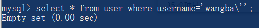

CG的web题目可以做的都做完了，在此对这次刷题进行总结，整理一下知识点，这里只列出一些对我来说比较新颖的知识点。需要注意的是，这个题库所有题目的PHP版本不是最新的，至少不是PHP7+。因此，部分知识在PHP7+不一定适用。
md5碰撞
md5碰撞的原理是：以"0e"开头且后面全是数字的字符串，在弱类型比较中被解释成科学计数法的0^n次幂，即 0。
if("0e213123" == "0"){
var_dump(true);
}
结果：bool(true)
利用这一点，可以使两个不同的明文而md5加密后都是以"0e"开头且后面全是数字的字符串，在弱类型比较中相等，从而绕过验证。
if(md5('s155964671a') == md5('s214587387a')){
var_dump(true);
}
结果：bool(true)
重定向
重定向的状态为302，重定向的方式有两种，一是服务器端PHP设置location头，二是JavaScript代码跳转。
<?php
header('Location: http://www.baidu.com/');
exit;
?>
<?php
echo "<script>window.location='http://www.baidu.com'</script>";
?>
结果：都会跳转，两种方式区别在于第一种直接重新发送get请求，而第二种有一个中间页面执行js代码，再发送get请求
aaencode
因为JavaScript1.5之后标识符不仅可以由ASCII组成，也可以是Unicode字符，再混淆一些代码，就看起来像乱码一样。这就是JavaScript颜文字加密的原理。实际上它仍是代码，所以可以在控制台直接执行。详细解释可看这里。
压缩加密webshell
gzdeflate()和gzinflate()是压缩和解压函数，base64_encode()和base64_decode()是base64加密和解密函数，利用这两对函数可以实现加密webshell。
function jiami($str){
$str2 = '';
for($i = 0; $i<strlen($str) ; $i++){ // 字符串ASCII + 1
$str2.=chr(ord($str[$i])+1);
}
return base64_encode(gzdeflate($str2)); // 压缩和加密字符串
}
echo jiami("phpinfo();");
结果：K8wszMpPL9DUsgEA
function CLsI($ZzvSWE) {
$ZzvSWE = gzinflate(base64_decode($ZzvSWE)); // 对密文解密和解压
for ($i = 0; $i < strlen($ZzvSWE); $i++) {
$ZzvSWE[$i] = chr(ord($ZzvSWE[$i]) - 1); // 字符串ASCII - 1
}
return $ZzvSWE;
}
echo CLsI("K8wszMpPL9DUsgEA");
结果：phpinfo();
如果把echo换成eval()函数，就可以直接执行代码了。
robots协议
robots协议也叫robots.txt（统一小写）是一种存放于网站根目录下的ASCII编码的文本文件，它通常告诉网络搜索引擎的漫游器（又称网络蜘蛛），此网站中的哪些内容是不应被搜索引擎的漫游器获取的，哪些是可以被漫游器获取的。详细请看这里。
/x00截断字符串
/x00是空白字符，它是字符串的结尾标志。在正则匹配函数中，对字符串的匹配只到第一个/x00，往后的字符串不再匹配。
// str=1231%00asdasd
if(ereg("^[1-9]+$" , $_GET['str']) == true){
var_dump(true);
}
结果：bool(true) // 1231为纯数字字符串，ereg匹配成功，返回 1
往后的asdasd不再匹配
但是在字符串函数中，字符串会被全部检索。
if(strpos("^[1-9]+$" , $_GET['str']) == true){
var_dump(true);
}else{
var_dump(false);
}
结果：bool(false) // 检索全部字符串
变量覆盖
如果我们可以控制变量名，那么就可以使它等于已定义的一些变量，从而覆盖变量原来的值。
// ?str=1234
$str = "abcd"; // $str原来的值
extract($_GET); // 数组键名作为变量名，键值作为变量值
echo $str;
结果：1234 // 覆盖值
参数为数组
如果函数的参数不应该是数组，那么传入参数的值为数组，函数返回值就为NULL。
$arr=array(1,2);
var_dump(strstr($arr,"1234"));
结果：NULL
0、false和NULL
在弱类型比较中，0、false和NULL是相等的。
var_dump(0==false && 0==NULL && false==NULL);
结果：bool(true)
client-ip
Client-ip首部是一些比较老的客户端和代理使用的扩展首部,用来传输运行客户端程序的计算机IP地址。
十六进制和十进制的弱类型比较
var_dump('0x10' == 16);
var_dump('0x10' == '16');
var_dump(0x10 == '16');
结果：
bool(true)
bool(true)
bool(true)
数据库特性
在数据库中，字符串包含的'\'也有转义的作用。

.bash_history
每个用户的根目录下都有一个.bash_history文件,他是隐藏文件,需要使用-a参数才会显示出来。这个文件的作用是保存了当前用户使用过的历史命令,方便以后查找。
vim备份文件
当非正常关闭vim编辑器时（比如直接关闭终端或者电脑断电），会生成一个.swp文件，这个文件是一个临时交换文件，用来备份缓冲区中的内容。备份文件名：文件名.swp，文件名包含后缀。
data://流封装协议
这个数据流与文件系统函数搭配，可以直接读取数据，不需要原有文件。
echo file_get_contents('data://text/plain,thisis');
结果：thisis
还可以在读取的过程中base64解密.
echo file_get_contents('data://text/plain;base64,dGhpc2lz');
结果：thisis
preg_match()的第三个参数
preg_match()第三个参数是匹配到的模式，包括子模式，但首元素是完全模式。
$content='[a]url[/a]';
preg_match("/(.*)\[a\](.*)\[\/a\](.*)/",$content,$url);
var_dump($url);
结果：
array(4) {
[0]=>
string(10) "[a]url[/a]"
[1]=>
string(0) ""
[2]=>
string(3) "url"
[3]=>
string(0) ""
}
preg_replace()可以执行命令
preg_replace()在旧版本PHP是可以在正则匹配模式/e的情况下，如果匹配成功，就可以直接将第二个参数作为代码执行。本地测试一下：


scandir读取目录
var_dump(scandir('./'));
结果：
array(14) {
[0]=>
string(1) "."
[1]=>
string(2) ".."
[2]=>
string(7) ".vscode"
[3]=>
string(12) "cardinal.php"
[4]=>
string(10) "cookie.txt"
}